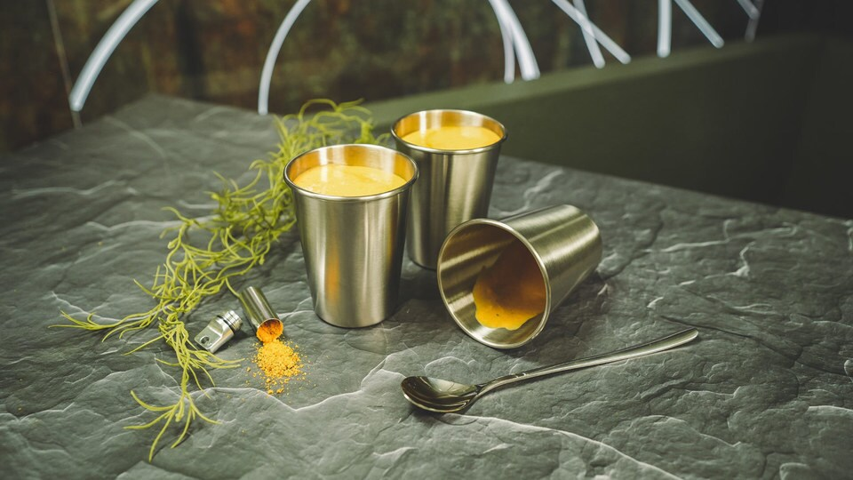

Pog Soup

Description
Creamy, savoury vegetable soup
Ingredients
- 1 yellow bell pepper
- 1 red bell pepper
- 1-1/2 tablespoons olive oil
- 1 cup diced sweet onion
- 1 carrot, diced
- 1 shallot, diced
- 2 cloves garlic, minced
- 1 teaspoon minced ginger
- 1-1/2 tablespoons curry powder
- 2 teaspoons turmeric
- 1 teaspoon coriander
- 1 teaspoon salt
- 2 cups vegetable broth
- 1 (14-oz) can unsweetened coconut milk
Steps
- Place peppers on a stainless steel baking sheet and place on a fireproof surface. Use a kitchen torch to flame the skin of the peppers until blistered and blackened. Use tongs to flip over and torch the other sides, until charred. Place the peppers in a large bowl and cover with plastic wrap. Let sit for 15 minutes. Rub off and discard the blackened skins. Remove stems and seeds, dice the peppers and set aside.
- In a large pot over medium heat add the olive oil, onion, carrot, and shallot. Cook for 5 minutes, until softened.
- Stir in the garlic, ginger, curry powder, turmeric, coriander, and salt. Cook for 1 minute, until fragrant.
- Add the diced roasted peppers and vegetable broth. Bring to a boil, then reduce heat to low. Cover and simmer for 30 minutes.
- Turn off the heat and stir in the coconut milk. Use an immersion blender and puree until smooth.
See original recipe on StarWars.com